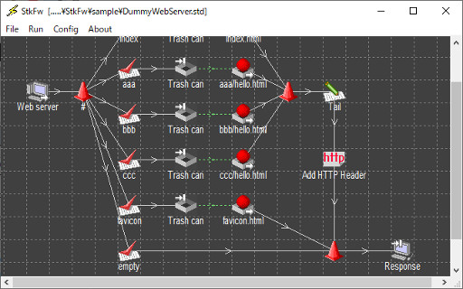

StkFw概要
StkFwは，「複数のソフトウェア／ハードウェアがIPネットワーク上で連携し
て動作する環境」をシミュレートするテスト支援ソフトウェアです。
ネットワーク上の複雑で高価な要素（ソフトウェアやハードウェア）と相互接続／
連携して動作するソフトウェアの開発で，各要素の振る舞いをテストプログラム化
することにより開発対象ソフトウェアのテスト工数を削減する手法は一般に良く
知られています。
しかし，テストプログラムの振る舞い（他ネットワーク要素との遣り取り）が複雑
な場合，テストプログラム開発のための初期投資費用が高くなる場合があります。
StkFwは，優れたユーザーインターフェースにより，IPネットワーク上での
データの送受信を簡易且つ詳細に制御できます。これにより実際にテストプログラム
を開発しなくても，テストプログラムと同等の振る舞いをStkFwで実現する
ことができ，ソフトウェアのテストに関わる工数を低減することができます。

システム要件
StkFwは以下の環境で動作します。
- 動作に必要なCPU: 1GHz以上のクロック周波数で動作するCPU
- 動作に必要なメモリ容量: 512MBytes以上
- 導入に必要な空きディスク容量: 20MBytes以上
- サポートするオペレーティングシステム／エディション:
Windows 10 (Only 64 bit edition)
Windows Server 2016
Windows Server 2019
変更履歴
バージョン 1.5.0 ---> 1.6.0
- TCP receiverの終了条件として，HTTPヘッダのContent-Lengthに指定されたサイ
ズのデータ受信を新たにサポートした。
- HTTPヘッダの追加および削除を可能にする処理要素を新たにサポートした。
- Windows Server 2016をサポートした。
バージョン 1.4.0 ---> 1.5.0
- インストーラプログラム（ファイル）をひとつのMSIファイルに統合した。
- 同一ポートで複数クライアントからの同時接続を可能にした。
- スレッド停止時に同じ受信要素が冗長なソケットクローズのログを出力する不良
を対策した。
- /openまたは/startパラメータ指定で起動したときに，カレントフォルダが.std
ファイルが配置されたフォルダと異なる不良を対策した。
- IPv6による接続をサポートした。
- Windows 8.1, Windows 10, Windows Server 2012 R2をサポートした。
バージョン 1.6.0 ---> 1.7.0
- プロパティダイアログボックスでHTTPヘッダを編集中に，HTTPヘッダの一部が不
正に削除される不具合を修正した。
- TCP receiverの終了条件として，HTTPヘッダの"Transfer-Encoding: chunked"の
指定を新たにサポートした。
- レスポンスデータ内のHTTPヘッダ部をHTTP header処理要素が削除できない不具
合を修正した。
- SSL/TLSによる接続をサポートした。
- Windows Server 2019をサポートした。
ダウンロード
1.7.0 Release: 2020/11/23
1.6.0 Release: 2018/11/04
1.5.0 Release: 2015/12/10